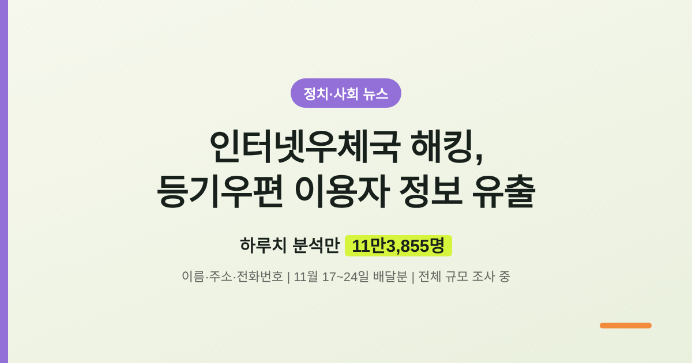
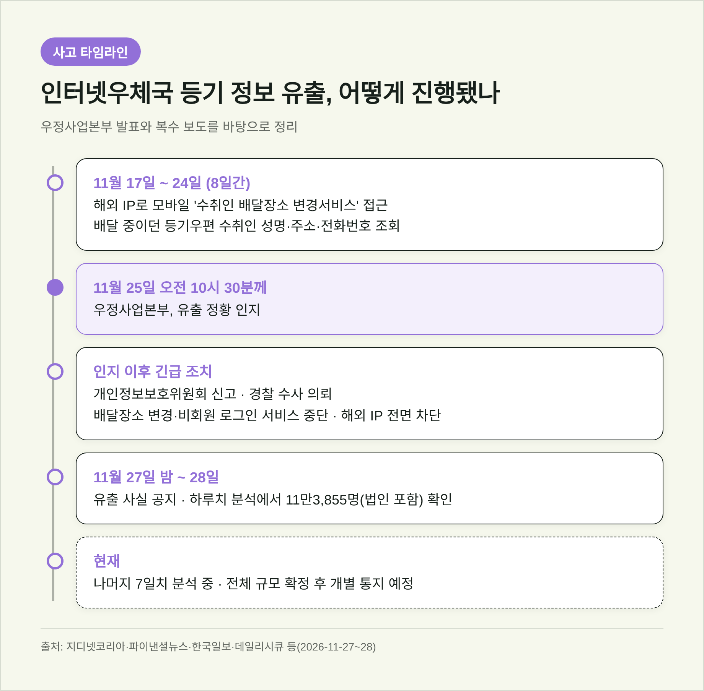
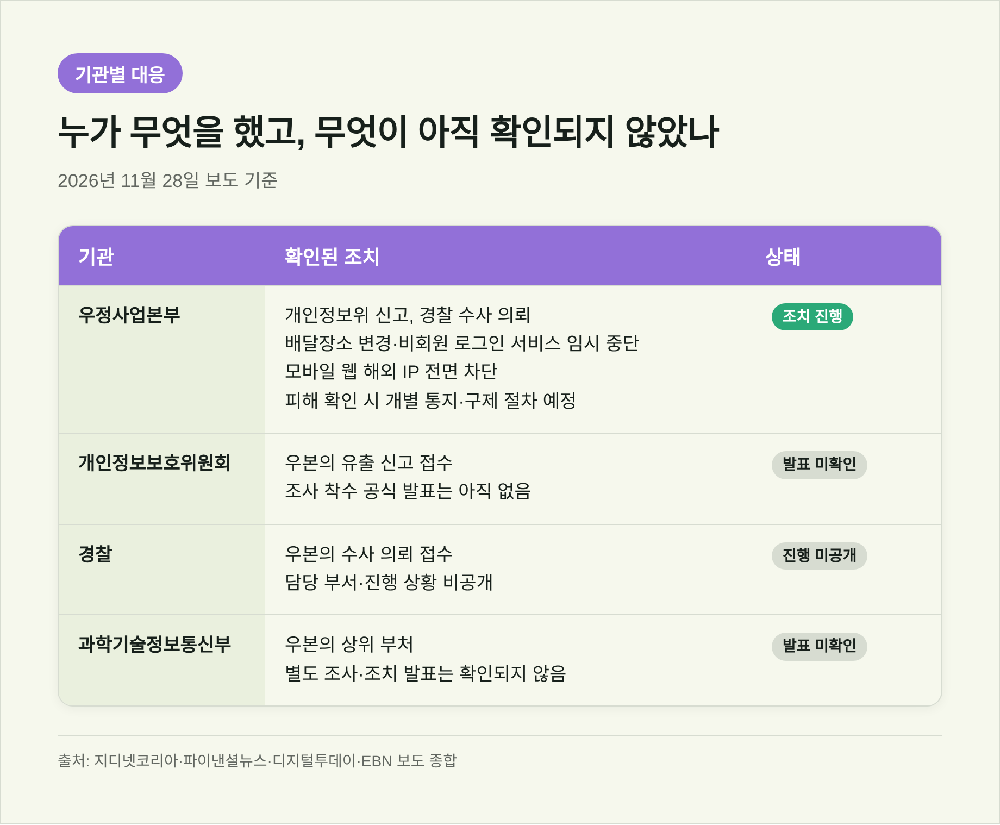
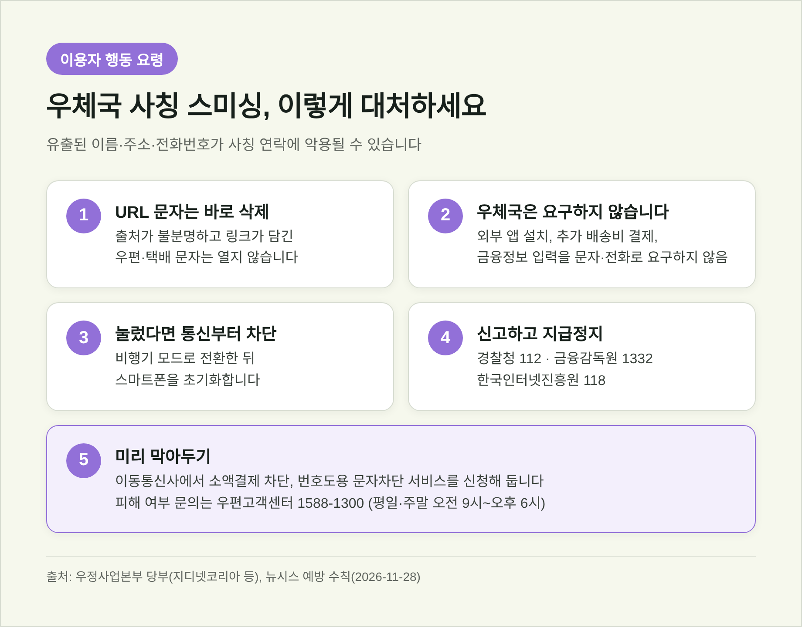
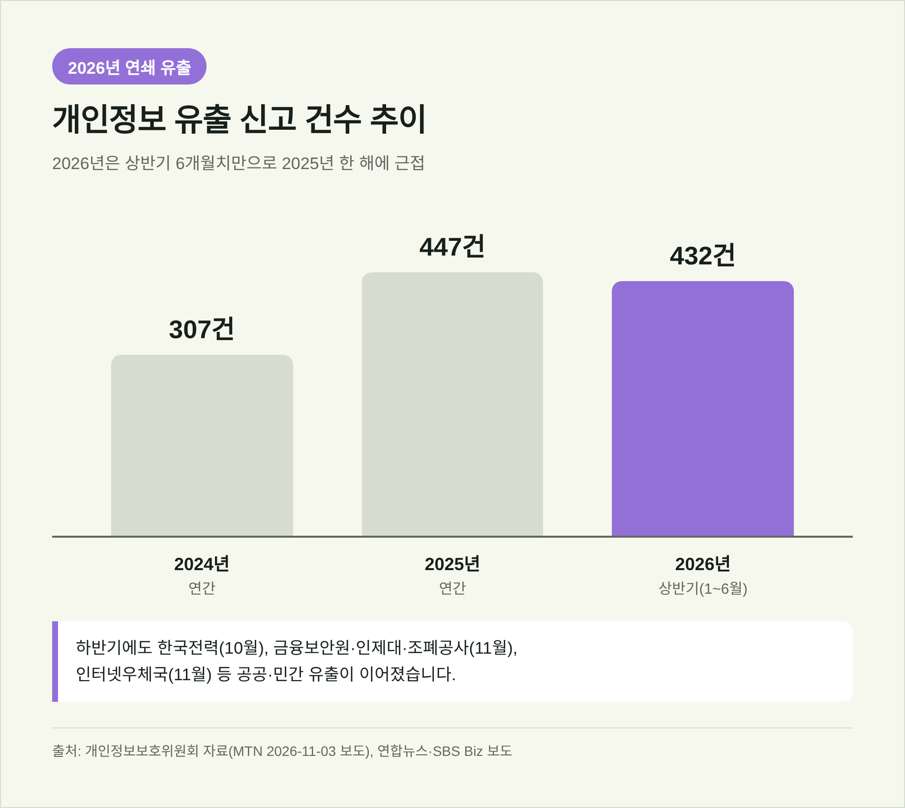
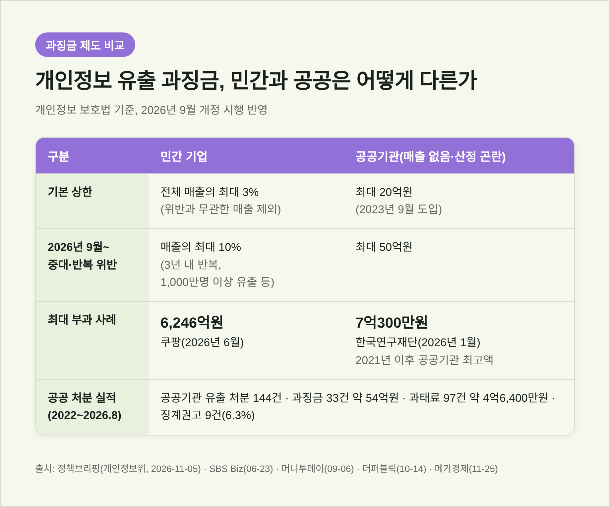

인터넷우체국 해킹, 등기우편 이용자 11만명 정보 유출 경위와 대처

인터넷우체국 해킹으로 등기우편 수취인의 개인정보가 새어 나간 사고를 정리해 보겠습니다. 무엇이 어떻게 유출됐는지, 기관들은 어떻게 대응하고 있는지, 이용자는 무엇을 조심해야 하는지를 차례로 짚습니다.
3줄 요약
- 11월 17~24일 배달 중이던 등기우편 수취인의 이름·주소·전화번호가 해외 IP 공격으로 조회됐습니다.
- 8일 가운데 하루치만 분석했는데도 법인 포함 11만3,855명이 확인됐고, 전체 규모는 아직 모릅니다.
- 우체국은 주소 변경이나 추가 배송비 결제를 문자로 요구하지 않습니다. 이런 연락은 일단 의심하시길 권합니다.
■ 무슨 일이 있었나
과학기술정보통신부 소속 우정사업본부(이하 우본)가 27일 밤 유출 사실을 알렸고, 28일 보도가 이어졌습니다.
공격자는 해외 IP를 이용해 모바일 인터넷우체국의 '수취인 배달장소 변경서비스'에 접근했습니다. 이 서비스는 배달 안내 문자를 받은 수취인이 원하는 곳에서 우편물을 받도록 돕는 기능입니다. 편의를 위해 열어 둔 창구가 정보가 빠져나간 통로가 된 셈입니다.
조회된 대상은 11월 17일부터 24일까지 배달 중이던 등기우편물입니다. 새어 나간 항목은 수취인의 성명, 주소, 전화번호 세 가지입니다. 우편물 내용이나 금융정보까지 유출됐는지는 확인되지 않았습니다.
우본은 25일 오전 10시 30분께 이상 정황을 처음 인지했습니다. 지금까지 분석을 마친 것은 8일치 기록 가운데 하루치뿐입니다. 그 하루치에서만 법인을 포함해 11만3,855명의 정보가 확인됐습니다.

이 수치는 지디넷코리아, 한국일보, 파이낸셜뉴스, 뉴스1 등 10곳이 넘는 매체에서 같게 보도됐습니다. 다만 하루치에 8을 곱해 전체 규모를 짐작하기는 어렵습니다. 같은 사람이 여러 날 조회됐을 수 있고, 날마다 조회량도 다를 수 있기 때문입니다. 최종 피해 규모는 남은 7일치 분석이 끝나야 나옵니다.
■ 기관별 대응은 어디까지 왔나
우본은 개인정보보호위원회에 유출을 신고하고 경찰에 수사를 의뢰했습니다. 문제의 배달장소 변경서비스와 비회원 로그인 서비스는 임시로 멈췄습니다. 우체국 모바일 웹에 접속하는 해외 IP도 전면 차단했습니다.
재발 방지책으로는 이상징후 실시간 모니터링 강화, 서비스별 개인정보 제공 최소화, 접근통제 강화를 내놓았습니다. 피해가 확인된 고객에게는 개별 안내를 하고, 개인정보보호법에 따라 구제 절차를 밟겠다는 방침입니다.
박인환 우정사업본부장은 "외부의 불법적인 해킹 공격으로 인해 국민과 우체국 고객에게 심려를 끼쳐드려 매우 송구스럽다"고 밝혔습니다. 원인을 철저히 규명하고 재발 방지 대책을 서두르겠다는 뜻도 덧붙였습니다.
다른 기관의 움직임은 아직 드러난 것이 적습니다. 28일 기준으로 상위 부처인 과기정통부의 별도 조사 발표나, 개인정보위의 조사 착수 공식 발표는 확인되지 않았습니다. 경찰 수사의 담당 부서와 진행 상황도 공개되지 않았습니다.

■ 왜 이름·주소·전화번호만으로도 위험한가
유출 항목이 세 가지뿐이라 가볍게 보일 수 있습니다. 하지만 등기우편이라는 점이 무게를 더합니다.
등기에는 법원, 행정기관, 금융기관이 보내는 문서가 많습니다. "누가 지금 중요한 우편을 기다리는지"를 아는 사람이 연락해 오면, 받는 쪽은 의심하기가 쉽지 않습니다. 보안 전문매체 데일리시큐도 이 조합이 우체국 사칭 스미싱과 보이스피싱에 악용될 수 있다고 짚었습니다.
우본이 당부한 내용은 분명합니다. 우체국을 사칭해 주소 변경을 요구하거나 추가 배송비 결제를 요구하는 문자·전화를 경계하라는 것입니다.
뉴시스가 정리한 예방 수칙도 함께 소개합니다.
- 출처가 불분명하고 인터넷 주소(URL)가 들어 있는 우편·택배 문자는 바로 삭제합니다.
- 우체국은 문자나 전화로 외부 앱 설치, 추가 배송비 결제, 금융정보 입력을 요구하지 않습니다.
- 의심 링크를 눌렀거나 악성 앱이 깔렸을 수 있다면 비행기 모드로 통신을 끊은 뒤 초기화합니다.
- 경찰청(112), 금융감독원(1332), 한국인터넷진흥원(118)에 신고하고 계좌 지급정지를 요청합니다.
- 이동통신사에서 소액결제 차단과 번호도용 문자차단 서비스를 신청해 둡니다.

본인이 피해 대상인지 궁금하시다면 우편고객센터(1588-1300)에 문의하실 수 있습니다. 평일과 주말 모두 오전 9시부터 오후 6시까지 운영하며, 주말에는 개인정보 유출 관련 문의만 받습니다.
■ 쟁점 하나 — 해외 IP 차단이면 충분한가
우본은 이번 사고를 "외부의 불법적인 해킹 공격"으로 규정했습니다. 공격에 쓰인 취약점이 무엇인지는 아직 공개하지 않았습니다.
보안업계의 시선은 조금 다릅니다. 데일리시큐는 정상 서비스 과정에서 수취인 본인확인과 조회 권한 검증이 제대로 됐는지를 먼저 따져야 한다고 봤습니다. 8일에 걸친 대량 조회를 잡아내는 탐지 체계가 제대로 작동했는지도 확인할 대목으로 꼽았습니다. 서버 측 접근통제 미흡, API 권한 검증 취약점, 자동화된 수집 공격 가능성이 조사 대상으로 거론됩니다.
해외 IP 차단의 한계도 지적됩니다. 공격자가 국내 IP를 거쳐 들어오면 같은 문이 다시 열릴 수 있다는 것입니다. 사후 대책이 서류가 아닌 실제 점검으로 검증돼야 한다는 보안 학계의 지적도 같은 맥락입니다. 우본이 서비스 중단과 IP 차단 외에 어떤 결함을 고쳤는지 공개하라는 요구가 나오는 이유입니다.
우본에도 사정은 있습니다. 주간경향이 보도한 김장겸 국민의힘 의원실 자료에 따르면, 2020년부터 2025년 8월까지 과기정통부와 소속·산하 64개 기관이 탐지한 해킹 시도는 5만6,076건이었습니다. 이 가운데 93.9%인 5만2,656건이 우본과 그 소속기관을 향했습니다. 방대한 개인·금융·물류 정보를 쥔 기관이라 늘 표적이 돼 왔다는 뜻입니다. 다만 이는 탐지된 '시도'의 숫자이고, 실제 침해 건수는 아닙니다.
김 의원은 당시 보안 투자와 관리 체계를 강화하고, 침해 시도가 많은 기관은 보험 가입 등 피해자 배상책을 갖춰야 한다고 주문했습니다. 1년여 뒤 실제 대규모 유출이 터졌다는 점에서 그 경고가 다시 읽힙니다.
■ 2026년, 공공과 민간을 가리지 않은 연쇄 유출
이번 사고는 홀로 일어난 일이 아닙니다. 올해는 공공과 민간을 가리지 않고 유출이 이어진 해로 기록될 듯합니다.
민간에서는 쿠팡 사고가 가장 컸습니다. 약 3,755만명의 정보가 유출됐고, 개인정보위는 6월 역대 최대인 6,246억원대 과징금을 매겼습니다.
공공에서도 굵직한 사고가 잇따랐습니다. 6월에는 중소벤처기업부의 '모두의 창업' 플랫폼에서 약 5,000명의 정보가 새어 나갔습니다. 10월에는 한국전력 직원 약 2만4천명의 정보가 외부 웹페이지에 노출됐고, 이후 이용자 정보 유출까지 확인되며 파장이 커졌습니다. 11월 중순에는 금융보안원, 인제대, 한국조폐공사의 지역화폐 플랫폼에서도 침해 사고가 드러났습니다.
통계도 같은 방향을 가리킵니다. 개인정보 유출 신고는 2024년 307건에서 2025년 447건으로 늘었고, 올해는 상반기에만 432건이 접수됐습니다.

예전에는 대형 유출이 몇 년에 한 번 터지는 사건이었습니다. 지금은 한 달에도 여러 기관의 이름이 오르내리는 일상이 됐습니다.
■ 공공기관 과징금, 민간과 왜 이렇게 다른가
우본은 공공기관입니다. 그래서 이번 사고는 공공기관 제재가 민간보다 가볍다는 오래된 논쟁을 다시 불러냅니다.
민간 기업은 매출을 기준으로 과징금을 냅니다. 9월 11일부터는 3년 내 반복 위반이나 1,000만명 이상 유출 같은 중대 사안에 매출의 최대 10%까지 물릴 수 있게 됐습니다.
매출을 잡기 어려운 공공기관은 사정이 다릅니다. 2023년 9월부터 최대 20억원의 과징금이 도입됐고, 올해 9월부터 중대·반복 유출에는 상한이 50억원으로 올랐습니다. 2021년 이후 공공기관에 실제로 부과된 최고액은 올해 1월 한국연구재단의 7억300만원입니다.

국회의 문제 제기도 이어졌습니다. 박성훈 국민의힘 의원이 개인정보위에서 받은 자료를 보면, 2022년부터 2026년 8월까지 공공기관 유출 처분은 144건, 유출 규모는 901만여 건이었습니다. 원인은 업무과실이 59.7%로 해킹(25.7%)보다 훨씬 많았습니다. 징계 권고가 나온 경우는 9건, 6.3%에 그쳤습니다. 박 의원은 과태료로 끝낼 것이 아니라 관리 책임과 재발 방지책이 실제로 작동하는지 검증해야 한다고 주장했습니다.
정부의 설명도 있습니다. 개인정보위는 11월 보도설명에서 과징금이 "해킹을 당한 것에 대한 제재가 아니라" 안전조치 의무를 어긴 데 대한 제재라고 밝혔습니다. 공공기관에 대해서는 상한 상향과 함께 위반 사실 전면 공표, 징계 권고 강화, 보호수준 평가 연계를 추진하겠다는 입장입니다.
양쪽 논리는 모두 일리가 있습니다. 공공기관은 영리 사업자가 아니어서 민간과 같은 방식으로 셈하기 어렵다는 의견이 있습니다. 반대로 국민 정보를 맡은 책임은 같으니 구분할 이유가 없다는 지적도 만만치 않습니다.
■ 앞으로 지켜볼 일정
가장 먼저 나올 것은 우본의 전체 피해 규모 발표입니다. 남은 7일치 분석이 끝나야 대상이 확정되고, 그 뒤에 개별 통지와 구제 절차가 이어집니다. 구체적인 일정은 아직 공개되지 않았습니다.
경찰 수사는 공격 주체와 해외 IP의 경로를 쫓는 데 초점이 맞춰질 것으로 보입니다.
개인정보위의 판단도 관심사입니다. 개인정보위는 10월 조사체계를 바꾸면서 '주요 공공시스템 해킹'을 중요사건 유형으로 꼽고, 이런 사건은 12개월 안에 처리한다는 원칙을 세웠습니다. 이번 사건이 여기에 해당하는지는 아직 정해지지 않았습니다. 9월 이후 사고인 만큼, 공공기관 50억원 상한이 적용될 '중대' 사안으로 볼지도 쟁점이 될 수 있습니다.
보안 전문매체 보도에 따르면 개인정보위는 12월부터 3개월간 공공기관과 민간기업을 대상으로 긴급점검에 나설 예정입니다. 그 결과가 이번 사고의 교훈을 얼마나 담아낼지 지켜볼 만합니다.
정리하면 이렇습니다. 이번 유출은 아직 '하루치'만 확인된 사고이고, 진짜 규모와 원인은 앞으로 드러납니다. 그 사이 이용자가 할 수 있는 일은 우체국을 사칭한 연락을 한 번 더 의심하는 것입니다.
"편리한 창구일수록 더 단단한 문이 필요하다" — 이번 사고가 남긴 질문은 결국 이것입니다.
공공기관이 이 질문에 답할 수 있겠냐고 물으신다면, 저는 남은 7일치 분석 결과와 그 이후의 설명을 먼저 보고 싶다고 답하겠습니다.
참고자료
- 지디넷코리아, 「인터넷우체국 해킹...등기우편 고객 정보 유출」(2026-11-28) https://zdnet.co.kr/view/?no=20261128143100
- 한국일보, 「인터넷우체국도 해킹당했다… 최소 11만3855명 개인정보 유출」(2026-11-28) https://www.hankookilbo.com/news/article/A2026112801210001124
- 미디어오늘, 「[속보] 이번엔 인터넷우체국 해킹, 하루치 유출 규모만 11만」(2026-11-28) https://mediatoday.co.kr/news/articleView.html?idxno=338783
- 뉴스1, 「인터넷우체국 해킹당했다…등기 이용자 11만명 이상 정보 유출」(2026-11-28) https://www.news1.kr/it-science/security-hacking/6369038
- 파이낸셜뉴스, 「인터넷우체국도 뚫렸다…등기우편 정보 11.3만명 유출」(2026-11-28) https://www.fnnews.com/news/202611280830358147
- 디지털투데이, 「인터넷우체국 개인정보 유출…하루치 분석서 11만3855명 확인」(2026-11-27) https://www.digitaltoday.co.kr/news/articleView.html?idxno=718975
- EBN, 「인터넷우체국 해킹에 고객 개인정보 유출…하루치만 11만명」(2026-11-28) https://www.ebn.co.kr/news/articleView.html?idxno=1733300
- 데일리시큐, 「인터넷우체국 대규모 해킹…하루치만 11만명 넘어, 추가 피해 확대 우려」(2026-11-28) https://www.dailysecu.com/news/articleView.html?idxno=209796
- 이투데이, 「인터넷우체국 해킹…하루치 분석만 11만명 개인정보 유출」(2026-11-27) https://www.etoday.co.kr/news/view/2654153
- 뉴시스(뉴스통 게재), 「'등기우편 수취인 정보 털렸다'…우체국 해킹 2차 피해 예방하려면」(2026-11-28) https://www.newstong.co.kr/view3.aspx?seq=14846630
- 이슈밸리, 「대한민국 왜 이러나…금융·공공 이어 우체국까지 뚫렸다」(2026-11-28) https://www.issuevalley.com/news/articleView.html?idxno=58389
- 주간경향, 「6년간 5만건 넘게 해킹 시도···우정사업본부 '최대 표적'」(2025-10-08) https://weekly.khan.co.kr/article/202510080613001
- 더퍼블릭, 「공공기관 개인정보 유출 901만건…징계권고는 6.3%뿐」(2026-10-14) https://www.thepublic.kr/news/articleView.html?idxno=322279
- 메가경제, 「국민 개인정보 털려도 보상은 '나 몰라라'…쿠팡엔 6246억, 정부기관은 솜방망이」(2026-11-25) https://megaeconomy.co.kr/news/newsview.php?ncode=1065575982385352
- 정책브리핑(개인정보보호위원회 보도설명), 「개인정보위는 법과 원칙에 따라 위반행위에 비례한 과징금을 산정하고 있습니다」(2026-11-05) https://www.korea.kr/news/policyNewsView.do?newsId=148975073
- SBS Biz, 「'모두의 창업' 정보유출 과징금 얼마나…공공기관·기업 격차 논란」(2026-06-23) https://biz.sbs.co.kr/amp/article/20000318408
- SBS Biz, 「'100만명 유출' 조사 1년 안에 끝낸다…개보위 조사체계 대수술」(2026-10-02) https://biz.sbs.co.kr/amp/article/20000338053
- SBS Biz, 「한전 직원 2만4천여명 정보 노출」(2026-10-04) https://biz.sbs.co.kr/amp/article/20000338255
- 머니투데이, 「개인정보 과징금 6년 새 110배…국고 입금은 5년 뒤」(2026-09-06) https://www.mt.co.kr/article/2026090219401562790
- MTN, 「개인정보 유출 잇따르자 예방 강화...정부, AI 해킹 대응책 논의」(2026-11-03) https://news.mtn.co.kr/article/2026110310063874768
- 연합뉴스(코리안센터 게재), 「금융·대학·공공기관까지 줄줄이 뚫렸다…개인정보 유출 비상」(2026-11-15) https://www.koreancenter.or.kr/news/articleView.html?idxno=1439589